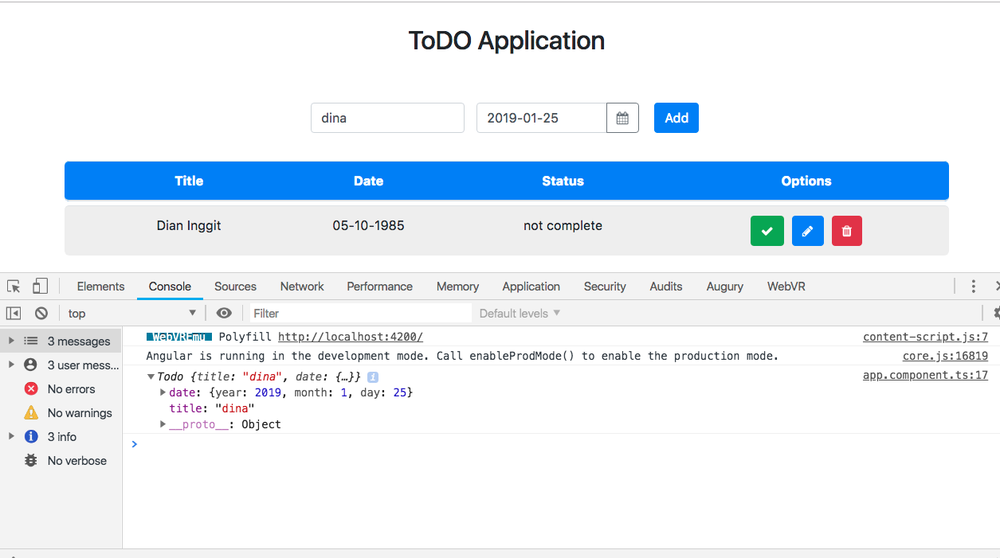
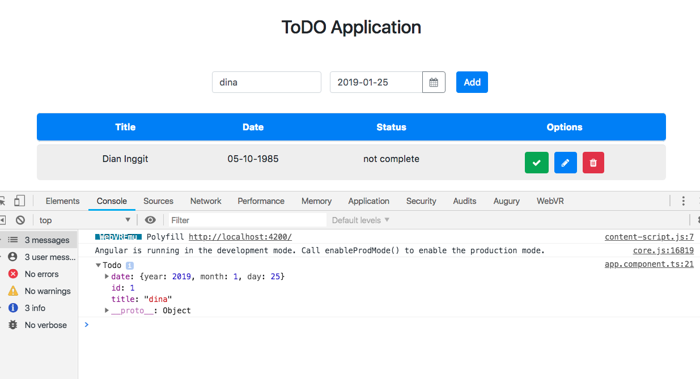
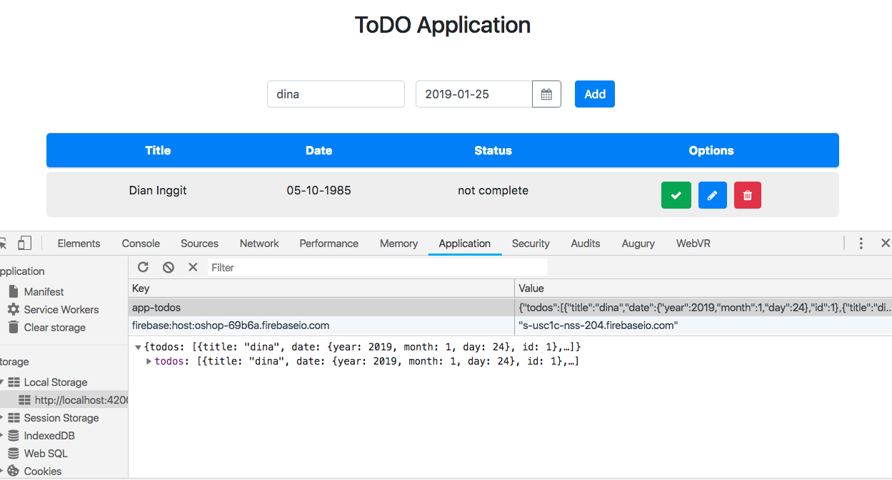

Kemampuan Akhir Yang Direncanakan
- Peserta mampu membuat method addTodo
Percobaan membuat method addTodo
- pada percobaan sebelumnya pada file app.component.ts terdapat method appTodo
- method appTodo ini digunakan sebagai trigger saat button add pada aplikasi ditekan. sebagai contoh lakukan percobaan berikut
- tambahkan console.log pada method appTdo
addTodo(){
console.log(this.newTodo);
}
- jika benar saat kita klik add maka akan tampil seperti berikut

- langkah berikutnya tambahkan beberapa code pada file app.component.ts
addTodo(){
// console.log(this.newTodo);
if(this.newTodo.title && this.newTodo.date){
this.todoService.addTodos(this.newTodo);
//cek isi new todo apakah berhasil
console.log(this.newTodo);
}
}
- jika berhasil maka akan seperti gambar berikut

- buka pada application disitu data untuk sementara tersimpan di localStorage

- tambahkan beberapa code agar pada saat setelah di klik add, inputan menjadi kosong kembali cat:di app.component.ts
addTodo(){
// console.log(this.newTodo);
if(this.newTodo.title && this.newTodo.date){
this.todoService.addTodos(this.newTodo);
//cek isi new todo apakah berhasil
// console.log(this.newTodo);
this.newTodo.title='';
this.newTodo.date='';